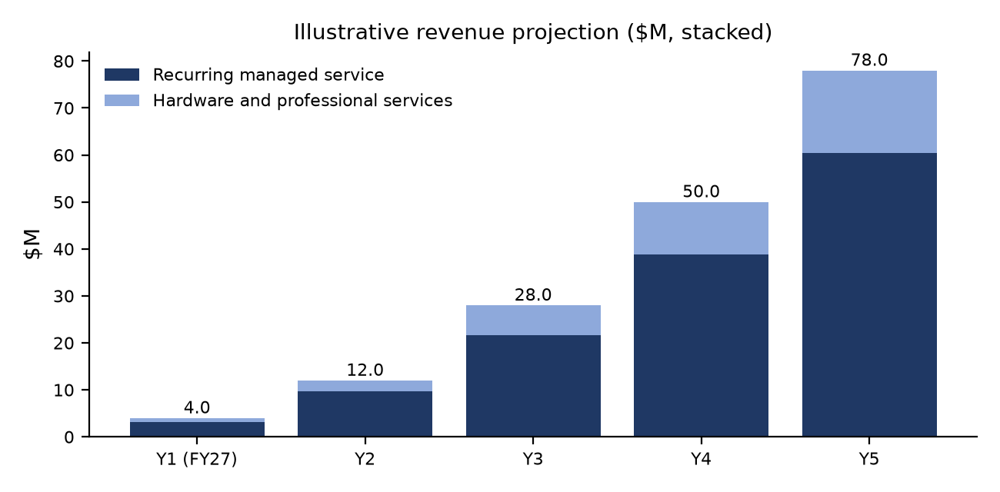

BUSINESS PLAN
LEO satcom managed services for civil government
Business plan: LEO satcom managed services for civil government
A plan for a multi-orbit, multi-vendor managed satcom integrator selling non-military connectivity to US federal civilian and international civil government agencies, with verified contract vehicles. Research current as of 26 Oct 2026.
Oct 26, 2026
Contents
Market opportunity and sizing 3
Target segments and use cases 4
Business model and service offerings 5
Non-military contract vehicles and programs 6
Go-to-market and contract strategy 9
Compliance and certifications 9
Operations and partnerships 10
Revenue by stream, $M (illustrative) 10
Executive summary
Recommendation: do not build a constellation. Launch an orbit-agnostic managed-service integrator that buys LEO capacity from several operators and adds MEO, GEO and L-band backup. On top of that it sells what agencies actually procure: secure, compliant, monitored connectivity with a single SLA, a portal, a 24/7 NOC and rapid kit deployment.
Timing favours this model. Starlink dominates supply, Amazon Leo is starting service, Telesat Lightspeed starts service in 2028, EU GOVSATCOM went live in January 2026 and IRIS² launches from 2029. Buyers want sovereignty and a second source, and an independent integrator can provide both.
Entry points: the GSA MAS COMSATCOM SIN 517410, partnerships with NASA SEWP VI and GSA EIS primes, and a lead pursuit of the State Department REACH embassy LEO requirement. Internationally, the plan is EU GOVSATCOM commercial capacity from 2027, UK Network Services 4, Canada through Telesat, Australia's BuyICT panel, and UN procurement through UNGM and the ETC.
Bottom line: Capital-light integrator, about $25M of illustrative funding to breakeven in year 3. Differentiate on multi-vendor resilience, compliance (FedRAMP, NIST 800-53, NIS2, GDPR) and sovereign routing, not on owning satellites. |
Market opportunity and sizing
Indicator | Figure | Source |
|---|---|---|
Global satellite services revenue, 2035 | $145B (+44% vs today); data services about $100B | Novaspace, Oct 2026 |
Satellite capacity market, 2035 | More than $46B (over 3x 2025) | Novaspace, Oct 2026 |
Global civil-government satcom, 2025 | $2.96B, growing to $6.99B by 2033 (11.6% CAGR) | Grand View Research |
Government/defence commercial satcom revenue, 2024 to 2034 | Over $2B to over $8.6B; NGSO $8.1B by 2034 | Novaspace, Oct 2025 |
NGSO share shift | NGSO revenue $90M in 2020; 25%+ CAGR forecast | Novaspace, Oct 2025 |
US BEAD | All 56 final proposals approved; LEO share ranges from 8.5% to 65% by state | NTIA; Benton Institute |
EU GOVSATCOM | Operational Jan 2026; commercial providers in catalogue 2027; full capability 2029 | EU Space / EUSPA |
Serviceable market (estimate): the civil-government segment, about $3B in 2025, is the core addressable pool. The defence figures show where operators' attention and capacity are going, but are out of scope.
Analysys Mason's civil-government forecast (2024 to 2034) covers fixed sites, land-mobile, handheld, maritime and aeronautical use, and is worth buying for bottom-up sizing.
Target segments and use cases
Segment | Example buyers | Use case | Priority |
|---|---|---|---|
Continuity of government (COOP/COG) | US federal civilian departments, EU member-state ministries | Diverse LEO + GEO backup WAN for HQs and alternate sites; integration with GETS/WPS | High |
Emergency response | FEMA, state EMAs, EU civil protection, rescEU | Fly-away kits, EOC backhaul, IPAWS resilience, deployable Wi-Fi for responders | High |
Embassies and remote posts | State Dept REACH (277 posts), EU EEAS, foreign ministries | Contingency kits with 48-hour delivery; election monitoring; evacuations | High |
Maritime and border | NOAA OMAO, coast guards, Frontex and border agencies | Vessel connectivity, remote border posts, multi-orbit failover | Medium |
Science and polar | NOAA, NSF polar programs, ESA and national research agencies | High-latitude LEO (OneWeb polar coverage), field camps, research vessels | Medium |
Rural public services | Clinics, schools, tribal and Indigenous governments (BEAD, UBF) | Managed LEO for anchor institutions; installation and helpdesk for subgrantees | Medium |
IoT and direct-to-device | Environmental monitoring, public safety (FirstNet), UOMO carriers | NB-IoT sensors (Iridium NTN Direct), D2D messaging fallback | Later (2027+) |
Humanitarian | WFP/ETC, UNICEF, UNHCR, World Bank-financed projects | Pre-positioned kits, camp connectivity, health-facility links | Medium |
Competitive landscape
Player | Orbit and status (Oct 2026) | Government posture | Implication for us |
|---|---|---|---|
Starlink / Starshield (SpaceX) | LEO; about 11,150 working satellites; 13.6M consumer subscribers (Q3 2026) | Available to US civil and state buyers through GSA channels; Starshield for national security; State Dept disaster MOU (Jun 2026) | Main supply source and main competitor. Resell it with a managed overlay; never depend on it alone. |
Amazon Leo (formerly Kuiper) | LEO; 396 launched; initial service targeted late 2026 | Head of Government named; Army demo (Oct 2026); FCC waiver cut its Ka/Ku priority | Second US LEO source from 2027. Sign a reseller agreement early, while channel terms are being set. |
Eutelsat OneWeb | LEO, global; Gen-2 replenishment ordered (669 Airbus satellites) | French state is largest shareholder (29.65%); Government Services revenue €235.5M, +17.7% (FY25-26) | Sovereign non-US LEO for EU and allied civil buyers; IRIS² operator (SpaceRISE). Core partner. |
Telesat Lightspeed | LEO; first 2 satellites Dec 2026; service Q1 2028 | Canadian sovereign anchor; SSC ACAN; C$2.3B Arctic defence deal | Canadian and enterprise-grade option for 2028+. Partner for Canada. |
IRIS² / EU GOVSATCOM | EU multi-orbit (330 LEO + 18 MEO); launches 2029 | GOVSATCOM Hub live Jan 2026 | Policy-driven sovereign channel. Be an accredited service integrator, not an operator. |
SES (with Intelsat) | GEO + MEO (O3b mPOWER), plus LEO partnerships | Large government business; NSPA MEO services | Multi-orbit peer and supplier. Use MEO for high-assurance trunks. |
Viasat / Inmarsat | GEO HTS and L-band | Long-standing government and maritime incumbent | L-band resilience layer; competitor on maritime. |
Iridium | LEO L-band; NTN Direct launches Q4 2026 | EMSS (DoD) at $110.5M a year | Narrowband backup, IoT and PTT layer. Partner. |
AST SpaceMobile | LEO direct-to-cell; 13 BlueBirds in orbit; intermittent service by end of 2026 | FirstNet partnership (AT&T) | Direct-to-device for responders 2027+. Integrate through carriers. |
The integrator gap: operators sell their own orbit, and incumbent integrators often depend on a single network. No player owns orbit-agnostic, accredited, sovereign-option managed service for civil agencies on both sides of the Atlantic.
Business model and service offerings
Recommended: multi-orbit managed-service integrator | Rejected: own constellation |
+ Capital-light; revenue within 6 to 9 months through existing vehicles + Vendor-neutral resilience, which buyers increasingly require + Rides every constellation's capacity growth and price decline + Can carry sovereign options (OneWeb, Lightspeed, IRIS²) for non-US buyers | – Billions in capex: IRIS² is 348 satellites; Amazon Leo has 1,000+ built – Spectrum filings and multi-year deployment risk (see Amazon Leo's FCC milestone waiver) – Competes head-on with SpaceX scale economics – No revenue before 2029 or later |
Service offerings
Offering | What it includes | Pricing basis |
|---|---|---|
Resilient Gov WAN | LEO primary with MEO/GEO or terrestrial failover, SD-WAN, 99.9%+ SLA, NOC monitoring | Per site per month, tiered by CIR/SLA |
Rapid Deployment Kits | Pre-configured LEO kits, cases, power, 48h/7d/15d delivery tiers, pooled airtime | Kit lease or purchase + pooled data plan |
Sovereign Connect (EU/allied) | OneWeb/GOVSATCOM-sourced service, in-region gateways, EU-hosted portal, NIS2 reporting | Per site per month; premium for sovereign routing |
Maritime and polar | Multi-orbit vessel and field-camp service, crew welfare separation, L-band backup | Per vessel per month |
Mission portal and analytics | Single account portal, usage and outage reporting, role-based access, APIs | Included; enterprise tier priced per seat or site |
Professional services | Site surveys, install, ATO/accreditation support, PACE planning, training | Fixed price or labour hour |
Non-military contract vehicles and programs
26 vehicles and programs: 11 US federal and 15 international. Status shading: green = active / good fit, amber = timing or access caveat, red = do not pursue.
# | Region | Name | Agency / buyer | Type | Status | Relevance | Link |
|---|---|---|---|---|---|---|---|
1 | US federal | GSA MAS IT, SIN 517410 Commercial Satellite Communications (COMSATCOM) | GSA, for federal, state, local and tribal buyers | Schedule (MAS SIN), Best-in-Class | Active, open to offers | Primary vehicle. Covers transponded capacity, subscription and managed services, terminals and engineering. Get on it first. | |
2 | US federal | Complex Commercial SATCOM Solutions (CS3) | GSA, for federal agencies | Multiple-award IDIQ, $2.5B ceiling | Closed to new holders; orders until 15 Oct 2027 | Team as a subcontractor to CS3 holders on recompetes; orders can run to 2032. | https://www.gsa.gov/technology/it-contract-vehicles-and-purchasing-programs/cs3 |
3 | US federal | Enterprise Infrastructure Solutions (EIS) | GSA, for federal agencies | Telecom IDIQ | Active to Jul 2032; GSA studying a successor | Agencies already buy LEO here (NOAA ship Starlink order via an EIS prime). Partner with EIS primes; shape the post-2032 successor. | |
4 | US federal | NASA SEWP VI | NASA, open to all federal agencies | GWAC (IDIQ), $20B max, 10 years | Awarded; orders start 1 Nov 2026 (SEWP V extended to 31 Jan 2027) | Fast terminal and bundled-service buys. Sell through a SEWP VI holder now; bid the next on-ramp. | |
5 | US federal | CIO-SP4 (NITAAC) | NIH NITAAC | GWAC | Cancelled Jan 2026, no awards; NITAAC GWACs stop new orders 29 Oct 2026 | Do not pursue. Listed so the team does not spend capture budget on it. | https://nitaac.nih.gov/resources/news/important-notice-nitaac-gwacs-cio-sp3-cio-sp3-sb-and-cio-cs |
6 | US federal | State Dept REACH: LEO terminals and airtime (RFI 19AQMM26N0223) | Department of State, 277 overseas posts | RFI, likely task order on GSA or a GWAC (1 base + 4 option years) | RFI closed 22 Jun 2026; solicitation pending | Best-fit early pursuit: pooled LEO kits, portal, 24/7 help desk, 48-hour emergency delivery, NIST 800-53 SCRM. Small-business set-aside signalled. | https://sam.gov/workspace/contract/opp/6ed41b8453bc49f78a885470fb2a4a1a/view |
7 | US federal | FEMA Integrated Public Alert & Warning System (IPAWS) | FEMA, plus 1,500+ alerting authorities | Program | Active (page updated May 2026) | Satellite backhaul and resilient pathways for alert origination and emergency operations centers. | https://www.fema.gov/emergency-managers/practitioners/integrated-public-alert-warning-system |
8 | US federal | CISA Priority Services (GETS, WPS) | CISA Emergency Communications Division | Program | Active; CISA 2026 strategy adds commercial satellite constellations | Integrate priority access across LEO and terrestrial paths for continuity-of-government users. | https://www.cisa.gov/topics/emergency-communications/priority-services |
9 | US federal | SAFECOM and grant guidance | CISA ECD, with state and local responders | Program and grant guidance | Active (2026 PACE survey) | Write PACE plans with LEO as the alternate or contingency path; match offers to grant-eligible items. | |
10 | US federal | BEAD (Broadband Equity, Access, and Deployment) | NTIA, through 56 states and territories | Grant ($42.45B program) | All 56 final proposals approved; LEO shares vary by state | Indirect: LEO subgrantees need installers, CPE logistics and compliance reporting. Integrator role, not a prime. | |
11 | US federal | USDA ReConnect | USDA Rural Utilities Service | Loan and grant | Active; satellite currently ineligible (technology-neutral rule proposed) | Watch only. Revisit if the technology-neutral rule is finalised. Automated link check was blocked; URL confirmed in a current search index. | |
12 | US federal | FirstNet satellite (AST SpaceMobile direct-to-cell) | FirstNet Authority and AT&T, for public-safety users | Program (public-private) | Beta in 2026; general availability planned for 2027 | Bundle direct-to-device with terminal LEO for responders. Partner, do not compete. | |
13 | International | EU GOVSATCOM (GOVSATCOM Hub) | European Commission and EUSPA, for EU member-state authorised users | Programme, with pooled capacity procurement | Operational since Jan 2026; commercial providers join the catalogue in 2027 | Prime civil target: crisis management, border and maritime, diplomatic networks. Qualify as a trusted commercial capacity provider through an EU-established entity. | |
14 | International | IRIS² secure connectivity | European Commission (DEFIS), ESA, EUSPA; SpaceRISE operators | Programme (PPP concession) | Implementation agreement signed 7 Aug 2026; first launches 2029 | 2029+ service-layer opportunity: become a reseller or integrator of IRIS² governmental services through the GOVSATCOM Hub. | https://defence-industry-space.ec.europa.eu/eu-space/iris2-secure-connectivity_en |
15 | International | ESA Connectivity & Secure Communications (ARTES 4.0) | European Space Agency | Co-funding (open calls) | Continuously open calls (ESA Star / OSIP) | Co-fund the multi-orbit orchestration software and resilience demos. | |
16 | International | EU Funding & Tenders portal (Civil Protection Mechanism, Copernicus, Horizon Europe) | European Commission DGs | Grants and tenders | Active | Single source for EU calls. Watch for rescEU and Copernicus Emergency Management connectivity needs. | https://ec.europa.eu/info/funding-tenders/opportunities/portal/ |
17 | International | UK Network Services 4 (RM6377) | UK Government Commercial Agency (formerly Crown Commercial Service) | Framework | Successor to NS3 (RM6116), being procured in 2026 | Satellite sits inside the WAN connectivity scope. Bid directly or as a supplier to a lot holder. | |
18 | International | UK Network Services 3 (RM6116) | UK Government Commercial Agency | Framework | Current agreement, being replaced by NS4 | Near-term route through existing NS3 suppliers. | |
19 | International | SSC Lightspeed satellite services (ACAN BPM026778/35176) | Shared Services Canada and partner departments | Advance Contract Award Notice (as-and-when) | Open; closes 2 Nov 2026 (pre-identified: Telesat LEO) | Signals Canadian sovereign-LEO preference. Partner with Telesat as a Canadian integrator; do not try to displace it. | https://canadabuys.canada.ca/en/tender-opportunities/tender-notice/ssc-26-00035176t |
20 | International | Universal Broadband Fund | ISED Canada | Grant | Funding available to 31 Mar 2027 | Northern and Indigenous community projects using LEO capacity (Telesat agreement). Installer and managed-service role. | https://www.ised-isde.canada.ca/site/high-speed-internet-canada/en/universal-broadband-fund |
21 | International | BuyICT Telecommunications Marketplace (SON3713272) | Australian Government (Finance, DTA); mandatory for non-corporate Commonwealth entities | Standing offer panel | Active; supplier terms to 30 Jun 2027 | Route to Australian federal buyers. Partner with a listed satellite supplier or join at the next refresh. | https://www.tenders.gov.au/Son/Show/bba863b3-a9c6-4f4c-8546-4a126489efb9 |
22 | International | Mobile Black Spot Program; Universal Outdoor Mobile Obligation | Australian Dept of Infrastructure; carriers | Grant program; legal obligation | MBSP active (terrestrial); UOMO enacted Oct 2026, default start Dec 2027 | UOMO drives direct-to-device LEO through carriers. Indirect opportunity. Automated link check was blocked; URL confirmed in a current search index. | |
23 | International | United Nations Global Marketplace (UNGM) | UN agencies (WFP, UNICEF, UNHCR, UNDP) | Procurement portal and vendor registration | Active | Register as a vendor. Satellite equipment and service tenders appear here. | |
24 | International | Emergency Telecommunications Cluster (ETC) | WFP-led global cluster | Program, partner network | Active | Standby-partner and pre-positioned connectivity kits for humanitarian response. | |
25 | International | ITU Emergency Telecommunications | ITU-D | Program (equipment deployment, national plans) | Active | Support national emergency telecom plans in developing countries; equipment-loan partnerships. | https://www.itu.int/en/ITU-D/Emergency-Telecommunications/Pages/default.aspx |
26 | International | World Bank project procurement | Borrower governments, World Bank financed | Financed procurement (tenders) | Active | Digital-development and disaster-resilience projects that tender connectivity for schools, clinics and emergency operations centers. | https://projects.worldbank.org/en/projects-operations/procurement |
Every link was opened on 26 Oct 2026. Three government sites (FEMA, USDA, Australian Department of Infrastructure) block automated fetches; each was confirmed in a current search index instead, and FEMA IPAWS content was read. Excluded on purpose: NATO NCIA, NSPA MEO Global Services, the Space Force PLEO and USSOCOM COMSATCOM pursuits (military). FEMA grant and DTA pages failed the link check and are left out.
Go-to-market and contract strategy
1. Months 0 to 6: ride others' vehicles
Subcontract to GSA MAS 517410, SEWP VI and EIS holders; answer the State REACH solicitation through a GSA holder. Small-business status helps on set-asides.
2. Months 3 to 12: own GSA MAS SIN 517410
eOffer with the Information Assurance checklist; TAA-compliant terminals; price list for kits, sites and pooled airtime.
3. Year 1: anchor customers
One embassy or remote-post program, one continuity-of-government backup WAN, one maritime/science fleet (NOAA-style).
4. Year 2: Europe and the UK
EU entity; qualify for the GOVSATCOM commercial catalogue (2027); NS4 lot or subcontract; ESA co-funding for orchestration software.
5. Years 2 to 3: Canada, Australia, UN
Telesat partner route for SSC and UBF; BuyICT panel partner; UNGM/ETC standby partnerships.
6. Years 3 to 5: shape successors
Influence the post-2032 EIS successor and IRIS² service distribution; on-ramp to SEWP VI.
Compliance and certifications
Framework | Applies to | Plan |
|---|---|---|
FedRAMP (Moderate; 20x route) | Cloud management portal, NOC tools, customer data | Host the portal on a FedRAMP-authorized IaaS; pursue a 20x Moderate authorization in year 2. |
FISMA / NIST SP 800-53 Rev 5 | Systems operated for agencies; State REACH SOW cites 800-53 SCRM | 800-53 Moderate control baseline, SSP, continuous monitoring, agency ATO support. |
NIST SP 800-171 / CMMC | Only if handling CUI or DoD work | Keep out of scope at launch. Build to 800-171 so CMMC Level 2 is reachable if civil work touches CUI. |
Section 889 and SCRM; TAA | All US federal sales | Vet terminal and network components; TAA-compliant sourcing for GSA. |
EU NIS2 | Satcom and managed services in the EU | EU entity, incident reporting (24h/72h), management accountability, supplier security. |
GDPR and data sovereignty | EU and UK customer traffic and metadata | In-region gateways and PoPs, EU-hosted portal, sovereign routing options (e.g. OneWeb, IRIS²). |
EU GOVSATCOM security accreditation | Capacity provided through the Hub | Prepare for EUSPA security requirements before the 2027 commercial catalogue opens. |
ITU and national licensing | Terminal landing rights, gateways, spectrum | Rely on operator landing rights; keep a country-by-country authorization matrix; local partners for licences. |
ITAR / EAR export controls | Terminals, encryptors, technical data | Classify every SKU (most commercial terminals are EAR); screen end users; avoid ITAR items in civil kits. |
UK Cyber Essentials Plus; ISO 27001 | UK frameworks; international tenders | ISO 27001 in year 1; Cyber Essentials Plus before bidding NS4. |
Operations and partnerships
Area | Detail | Timing |
|---|---|---|
Capacity partners | Starlink (gov/enterprise channel), Amazon Leo, Eutelsat OneWeb, SES O3b mPOWER, Iridium; Telesat Lightspeed from 2028 | Year 1-2 |
Prime/teaming partners | GSA MAS 517410, EIS and SEWP VI holders; UK NS3/NS4 suppliers; Canadian SSC suppliers | Year 1 |
24/7 NOC and help desk | US-based NOC with US-person staff; EU NOC from year 2 for sovereignty; follow-the-sun support | Year 1-2 |
Logistics depots | Pre-positioned kits in the US East Coast, EU (e.g. Luxembourg), and a Gulf or Asia hub for 48-hour delivery | Year 1-3 |
Technology stack | Orbit-agnostic SD-WAN, encryption overlay (FIPS 140-3 validated), portal on FedRAMP-authorized cloud | Year 1 |
Team at launch | About 25 staff: capture/contracts, solutions engineering, NOC, security/compliance, logistics (estimate) | Year 1 |
Financial plan
Illustrative only: Every figure in this section is a planning assumption, not a forecast or sourced data. |
Revenue by stream, $M (illustrative)

Illustrative series ($M) | Y1 (FY27) | Y2 | Y3 | Y4 | Y5 |
|---|---|---|---|---|---|
Recurring managed service | 3.2 | 9.7 | 21.6 | 38.9 | 60.5 |
Hardware and professional services | 0.8 | 2.3 | 6.4 | 11.1 | 17.5 |
Key metrics (illustrative)
Illustrative metric | Y1 | Y2 | Y3 | Y4 | Y5 |
|---|---|---|---|---|---|
Average active managed sites/kits | 150 | 450 | 1,000 | 1,800 | 2,800 |
Revenue ($M) | 4.0 | 12.0 | 28.0 | 50.0 | 78.0 |
Gross margin | 25% | 28% | 32% | 35% | 38% |
EBITDA ($M) | -6.0 | -3.5 | 1.5 | 6.0 | 12.0 |
Headcount | 25 | 45 | 75 | 110 | 150 |
Assumptions (illustrative)
Assumption | Value |
|---|---|
Pricing model | Per site/kit monthly recurring charge; tiers by SLA and CIR; pooled airtime for kits; separate managed-service fee |
Blended monthly revenue per site | $1,800 (assumption: wholesale LEO + MEO/GEO backup + managed overlay) |
Revenue mix | About 78% recurring, 22% hardware and professional services |
Margin drivers | Managed-layer and software margin 50%+; pass-through capacity 15-20%; falling LEO wholesale prices |
Funding need | About $25M across seed and Series A to breakeven in year 3; working-capital line for kit inventory |
Market-share check | Year 5 revenue is about 1.4% of an extrapolated civil-government satcom market (Grand View, 11.6% CAGR) |
Risks and mitigations
Risk | Severity | Mitigation |
|---|---|---|
Supplier concentration on Starlink | High | Contract at least 2 LEO sources plus MEO/GEO by year 2; orbit-agnostic SD-WAN; second-source clause in every bid. |
Operator goes direct to government | High | Own the integration, security accreditation, help desk and multi-vendor failover that operators do not bundle. |
Constellation delays (Amazon Leo, Lightspeed, IRIS²) | Medium | Plan revenue on operational systems only; treat new constellations as upside. |
Procurement cycle length and protests | High | Lead with GSA MAS and task orders on existing vehicles; teaming to reach revenue in months, not years. |
Compliance cost (FedRAMP, NIS2, accreditation) | Medium | Inherit controls from authorized clouds; phase authorizations to customer demand. |
Margin compression as LEO prices fall | Medium | Price the managed layer separately; volume tiers; grow software and services mix. |
Geopolitics and sovereignty rules | Medium | Separate US and EU legal entities; sovereign routing options; local partners. |
Spectrum and landing-rights changes | Low | Country authorization matrix; multi-operator coverage per country. |
Milestones and roadmap
When | Milestone | Phase |
|---|---|---|
Q4 2026 | Form US entity; ISO 27001 project; sign first LEO reseller agreement; respond to State REACH solicitation via a GSA holder | Foundation |
Q1 2027 | Submit GSA MAS offer with SIN 517410; team with SEWP VI and EIS primes; register on UNGM | Vehicles |
Q2 2027 | First federal civil task orders (embassy or remote-post kits, continuity-of-government backup); 24/7 NOC live | First revenue |
Q3 2027 | EU entity; position for GOVSATCOM commercial catalogue; Amazon Leo and OneWeb agreements live | EU entry |
Q4 2027 | FedRAMP 20x Moderate submission for the portal; UK NS4 bid or subcontract | Compliance |
2028 | Lightspeed capacity for Canada; Canadian partner; ESA co-funded multi-orbit orchestration demo | Scale |
2029-2030 | IRIS² governmental services integration through the GOVSATCOM Hub; direct-to-device bundles with carriers | Sovereign layer |
Sources
Contract vehicle and program links are listed in the table in the section “Non-military contract vehicles and programs”.